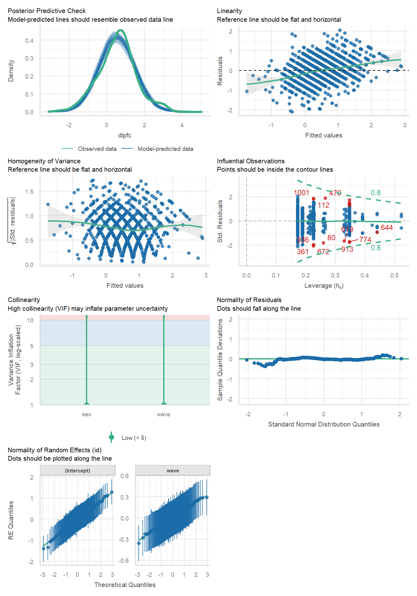

#Load used libraries
library(tidyverse)
library(readr)
library(lmerTest)
library(rstatix)
library(ggpubr)
library(knitr)
library(easystats)
options(digits = 2)
# Load data and transform to long format
executive_function <- read_csv("datasets/executive-function.csv")
# The variables (dlpfc, ef and age) were separated to transform the data in long format.
ex.func_dlpfc <- executive_function %>%
select(1:7) %>%
pivot_longer(cols = 4:7, names_to = "wave", values_to = "dlpfc") %>%
mutate(wave = case_when(wave == "dlpfc1" ~ as_factor(0),
wave == "dlpfc2" ~ as_factor(1),
wave == "dlpfc3" ~ as_factor(2),
wave == "dlpfc4" ~ as_factor(3)),
id = as.factor(id),
treatment = ifelse(tx == 0, "Treatment 0", "Treatment 1"))
ex.func_ef <- executive_function %>%
select(1:3, 8:11) %>%
pivot_longer(cols = 4:7, names_to = "wave", values_to = "ef") %>%
mutate(wave = case_when(wave == "ef1" ~ as_factor(0),
wave == "ef2" ~ as_factor(1),
wave == "ef3" ~ as_factor(2),
wave == "ef4" ~ as_factor(3)),
id = as.factor(id),
treatment = ifelse(tx == 0, "Treatment 0", "Treatment 1"))
ex.func_age <- executive_function %>%
select(1:3, 12:15) %>%
pivot_longer(cols = 4:7, names_to = "wave", values_to = "age") %>%
mutate(wave = case_when(wave == "age1" ~ as_factor(0),
wave == "age2" ~ as_factor(1),
wave == "age3" ~ as_factor(2),
wave == "age4" ~ as_factor(3)),
id = as.factor(id),
treatment = ifelse(tx == 0, "Treatment 0", "Treatment 1"))
# And the it were put all together in a single data frame.
data <- list(ex.func_dlpfc, ex.func_ef, ex.func_age)
full_data <- reduce(data, full_join)Summary
The present document is a longitudinal data analysis and modeling report. The dataset used can be obtained from here. This dataset contains the dorsolateral prefrontal cortex (DLPFC) activity measured when adolescents (ages 11.74 - 15.33) were subjected to an executive function task. Behavioral scores on that tasks are also included. The measurements were distributed in 4 annually waves. The variables of the dataset are subject identification (‘id’), subject sex (‘sex’), treatment group (‘tx’), annual measures of DLPFC activity during task (‘dlpfc’), behavioral score on that task (‘ef’) and age(‘age’). In this study, the focus will be on the DLPFC activity.
Dataset Organization
In this section, the dataset is loaded and transformed to a long format:
Exploratory Data Analysis
In this section the characteristics of the dataset are evaluated regarding missing values, balance and main statistics.
# Missing values
mean(is.na(full_data))[1] 0.021# Balanced groups?
mean(full_data$sex == 1)[1] 0.5mean(full_data$tx == 1)[1] 0.51full_data_sex1 <- full_data %>%
filter(sex == 1)
full_data_sex0 <- full_data %>%
filter(sex == 0)
kable(tibble(expand.grid(Sex = c(0,1),
Treatment = c(0,1)),
Proportion = c(mean(full_data_sex0$tx == 0),
mean(full_data_sex1$tx == 0),
mean(full_data_sex0$tx == 1),
mean(full_data_sex1$tx == 1))))| Sex | Treatment | Proportion |
|---|---|---|
| 0 | 0 | 0.34 |
| 1 | 0 | 0.64 |
| 0 | 1 | 0.66 |
| 1 | 1 | 0.36 |
There is no balance of sex within treatment. Most of the subjects (64%) of treatment 0 correspond to sex 1 and most of the subjects (66%) of treatment 1 correspond to sex 0. If there is an effect of treatment on the DLPFC activity, it could be masked by any sex effect.
Here, main statistics of the DLPFC activity variable are presented.
#Summary statistics of the different variables
#Overall DLPFC activity
dlpfc_stats <- full_data %>%
select(- treatment) %>%
group_by(wave) %>%
get_summary_stats(dlpfc)
kable(dlpfc_stats, caption = "Statistics of DLPFC activity across waves")| wave | variable | n | min | max | median | q1 | q3 | iqr | mad | mean | sd | se | ci |
|---|---|---|---|---|---|---|---|---|---|---|---|---|---|
| 0 | dlpfc | 342 | -2.5 | 3.1 | 0.47 | -0.18 | 1.1 | 1.3 | 0.97 | 0.54 | 1.0 | 0.05 | 0.11 |
| 1 | dlpfc | 325 | -2.5 | 3.1 | 0.80 | -0.18 | 1.1 | 1.3 | 0.97 | 0.67 | 1.1 | 0.06 | 0.12 |
| 2 | dlpfc | 320 | -2.5 | 3.1 | 0.80 | 0.14 | 1.5 | 1.3 | 0.97 | 0.79 | 1.1 | 0.06 | 0.12 |
| 3 | dlpfc | 317 | -2.8 | 3.1 | 0.80 | 0.14 | 1.5 | 1.3 | 0.97 | 0.91 | 1.1 | 0.06 | 0.12 |
#DLPFC activity by sex
dlpfc_stats_sex1 <- full_data %>%
select(- treatment) %>%
group_by(wave) %>%
filter(sex == 1) %>%
get_summary_stats(dlpfc)
kable(dlpfc_stats_sex1, caption = "Statistics of DLPFC activity for sex = 1 across waves")| wave | variable | n | min | max | median | q1 | q3 | iqr | mad | mean | sd | se | ci |
|---|---|---|---|---|---|---|---|---|---|---|---|---|---|
| 0 | dlpfc | 170 | -2.5 | 3.1 | 0.8 | 0.14 | 1.1 | 0.98 | 0.97 | 0.64 | 1.03 | 0.08 | 0.16 |
| 1 | dlpfc | 160 | -2.1 | 3.1 | 0.8 | 0.14 | 1.5 | 1.31 | 0.97 | 0.83 | 1.03 | 0.08 | 0.16 |
| 2 | dlpfc | 156 | -2.1 | 3.1 | 0.8 | 0.14 | 1.5 | 1.31 | 0.97 | 0.85 | 1.03 | 0.08 | 0.16 |
| 3 | dlpfc | 153 | -1.8 | 3.1 | 1.1 | 0.47 | 1.8 | 1.31 | 0.97 | 1.03 | 0.98 | 0.08 | 0.16 |
dlpfc_stats_sex0 <- full_data %>%
select(- treatment) %>%
group_by(wave) %>%
filter(sex == 0) %>%
get_summary_stats(dlpfc)
kable(dlpfc_stats_sex0, caption = "Statistics of DLPFC activity for sex = 0 across waves")| wave | variable | n | min | max | median | q1 | q3 | iqr | mad | mean | sd | se | ci |
|---|---|---|---|---|---|---|---|---|---|---|---|---|---|
| 0 | dlpfc | 172 | -1.8 | 3.1 | 0.47 | -0.18 | 0.8 | 0.98 | 0.97 | 0.44 | 0.96 | 0.07 | 0.14 |
| 1 | dlpfc | 165 | -2.5 | 3.1 | 0.47 | -0.18 | 1.1 | 1.31 | 0.97 | 0.51 | 1.15 | 0.09 | 0.18 |
| 2 | dlpfc | 164 | -2.5 | 3.1 | 0.80 | 0.14 | 1.5 | 1.31 | 0.97 | 0.73 | 1.14 | 0.09 | 0.18 |
| 3 | dlpfc | 164 | -2.8 | 3.1 | 0.80 | 0.14 | 1.5 | 1.31 | 0.97 | 0.80 | 1.13 | 0.09 | 0.17 |
#DLPFC activity by treatment
dlpfc_stats_tx1 <- full_data %>%
select(- treatment) %>%
group_by(wave) %>%
filter(tx == 1) %>%
get_summary_stats(dlpfc)
knitr::kable(dlpfc_stats_tx1, caption = "Statistics of DLPFC activity for tx = 1 across waves")| wave | variable | n | min | max | median | q1 | q3 | iqr | mad | mean | sd | se | ci |
|---|---|---|---|---|---|---|---|---|---|---|---|---|---|
| 0 | dlpfc | 174 | -1.8 | 3.1 | 0.47 | -0.18 | 0.8 | 0.98 | 0.97 | 0.51 | 1.0 | 0.08 | 0.15 |
| 1 | dlpfc | 165 | -2.5 | 3.1 | 0.80 | -0.18 | 1.1 | 1.31 | 0.97 | 0.61 | 1.1 | 0.09 | 0.17 |
| 2 | dlpfc | 163 | -2.5 | 3.1 | 0.80 | 0.14 | 1.5 | 1.31 | 0.97 | 0.80 | 1.1 | 0.09 | 0.17 |
| 3 | dlpfc | 162 | -1.8 | 3.1 | 0.80 | 0.14 | 1.5 | 1.31 | 0.97 | 0.89 | 1.1 | 0.08 | 0.16 |
dlpfc_stats_tx0 <- full_data %>%
select(- treatment) %>%
group_by(wave) %>%
filter(tx == 0) %>%
get_summary_stats(dlpfc)
kable(dlpfc_stats_tx0, caption = "Statistics of DLPFC activity for tx = 0 across waves")| wave | variable | n | min | max | median | q1 | q3 | iqr | mad | mean | sd | se | ci |
|---|---|---|---|---|---|---|---|---|---|---|---|---|---|
| 0 | dlpfc | 168 | -2.5 | 3.1 | 0.8 | 0.14 | 1.1 | 0.98 | 0.97 | 0.57 | 0.99 | 0.08 | 0.15 |
| 1 | dlpfc | 160 | -2.1 | 3.1 | 0.8 | 0.14 | 1.5 | 1.31 | 0.97 | 0.73 | 1.10 | 0.09 | 0.17 |
| 2 | dlpfc | 157 | -2.1 | 3.1 | 0.8 | 0.14 | 1.5 | 1.31 | 0.97 | 0.77 | 1.06 | 0.09 | 0.17 |
| 3 | dlpfc | 155 | -2.8 | 3.1 | 0.8 | 0.47 | 1.5 | 0.98 | 0.97 | 0.93 | 1.07 | 0.09 | 0.17 |
After examining confidence intervals, in all these cases there was statistical significant difference between the DLPFC activity means at wave 0 and wave 3. In the case of treatment = 0 and sex = 0, it seems that there was no difference between the means at those waves. There was less than 60 subjects in this group. This smaller sample increased the standard error and consequently, the confidence interval:
dlpfc_stats_tx0_sex0 <- full_data %>%
select(- treatment) %>%
group_by(wave) %>%
filter(tx == 0 & sex == 0) %>%
get_summary_stats(dlpfc)
kable(dlpfc_stats_tx0_sex0, caption = "Statistics of DLPFC activity for tx = 0 and sex = 0 across waves")| wave | variable | n | min | max | median | q1 | q3 | iqr | mad | mean | sd | se | ci |
|---|---|---|---|---|---|---|---|---|---|---|---|---|---|
| 0 | dlpfc | 59 | -1.5 | 2.4 | 0.14 | -0.18 | 0.96 | 1.15 | 0.97 | 0.37 | 0.95 | 0.12 | 0.25 |
| 1 | dlpfc | 58 | -1.8 | 2.8 | 0.47 | -0.51 | 1.13 | 1.64 | 1.46 | 0.43 | 1.19 | 0.16 | 0.31 |
| 2 | dlpfc | 57 | -1.8 | 2.8 | 0.80 | 0.14 | 1.13 | 0.98 | 0.97 | 0.61 | 1.11 | 0.15 | 0.29 |
| 3 | dlpfc | 56 | -2.8 | 3.1 | 0.64 | -0.18 | 1.46 | 1.64 | 1.22 | 0.65 | 1.20 | 0.16 | 0.32 |
Something similar is observed at treatment = 1 and sex = 1 group:
dlpfc_stats_tx1_sex1 <- full_data %>%
select(- treatment) %>%
group_by(wave) %>%
filter(tx == 1 & sex == 1) %>%
get_summary_stats(dlpfc)
kable(dlpfc_stats_tx1_sex1, caption = "Statistics of DLPFC activity for tx = 1 and sex = 1 across waves")| wave | variable | n | min | max | median | q1 | q3 | iqr | mad | mean | sd | se | ci |
|---|---|---|---|---|---|---|---|---|---|---|---|---|---|
| 0 | dlpfc | 61 | -1.5 | 3.1 | 0.47 | -0.18 | 1.1 | 1.31 | 0.97 | 0.58 | 1.1 | 0.14 | 0.28 |
| 1 | dlpfc | 58 | -1.5 | 3.1 | 0.80 | 0.14 | 1.1 | 0.98 | 0.97 | 0.71 | 1.0 | 0.14 | 0.28 |
| 2 | dlpfc | 56 | -1.5 | 2.8 | 0.80 | 0.14 | 1.5 | 1.31 | 0.97 | 0.84 | 1.0 | 0.14 | 0.28 |
| 3 | dlpfc | 54 | -1.8 | 3.1 | 0.80 | 0.47 | 1.5 | 0.98 | 0.97 | 0.93 | 1.0 | 0.14 | 0.28 |
Graphical Data Analysis
dlpfc_hist <- full_data %>%
ggplot(aes(dlpfc))+
geom_histogram()+
facet_grid(~wave, labeller = as_labeller(c("0" = "Wave 0",
"1" = "Wave 1",
"2" = "Wave 2",
"3" = "Wave 3")))
dlpfc_histThe shift to higher values across waves can be observed by the increase in the proportion of observations that are higher than 2 of DLPFC activity:
wave0 <- full_data %>%
filter(wave == 0)
wave1 <- full_data %>%
filter(wave == 1)
wave2 <- full_data %>%
filter(wave == 2)
wave3 <- full_data %>%
filter(wave == 3)
# proportion of DLPFC values higher than 2 across waves
kable(tibble(Wave = c(0, 1, 2, 3),
"Proportion > 2 DLPFC activity" = c(mean(wave0$dlpfc > 2, na.rm = TRUE),
mean(wave1$dlpfc > 2, na.rm = TRUE),
mean(wave2$dlpfc > 2, na.rm = TRUE),
mean(wave3$dlpfc > 2, na.rm = TRUE))))| Wave | Proportion > 2 DLPFC activity |
|---|---|
| 0 | 0.09 |
| 1 | 0.12 |
| 2 | 0.14 |
| 3 | 0.15 |
dlpfc_hist2 <- full_data %>%
mutate(sex = ifelse(sex == 0, "Sex 0", "Sex 1")) %>%
ggplot(aes(dlpfc))+
geom_histogram()+
facet_grid(sex~wave, labeller = as_labeller(c("0" = "Wave 0",
"1" = "Wave 1",
"2" = "Wave 2",
"3" = "Wave 3",
"Sex 0" = "Sex 0",
"Sex 1" = "Sex 1")))
dlpfc_hist2# Overall boxplot
dlpfc_box <- full_data %>%
ggplot(aes(wave, dlpfc))+
geom_boxplot()+
geom_pwc()+
xlab("Wave")+
ylab("DLPFC activity")+
theme_minimal() +
theme(legend.position = "none")
dlpfc_box# Boxplot comparing sex and treatment
dlpfc_box_sex <- full_data %>%
mutate(sex = as.factor(sex)) %>%
ggplot(aes(wave, dlpfc, fill = sex))+
geom_boxplot()+
geom_pwc()+
xlab("Wave")+
ylab("DLPFC activity")+
theme_minimal() +
theme(legend.position = "bottom",
strip.text = element_text(face = "bold"))+
facet_grid(~treatment)
dlpfc_box_sex
# Boxplot comparing treatment and sex
dlpfc_box_tx <- full_data %>%
ggplot(aes(wave, dlpfc, fill = treatment))+
geom_boxplot()+
geom_pwc()+
xlab("Wave")+
ylab("DLPFC activity")+
labs(fill = "Treatment")+
theme_minimal() +
theme(legend.position = "bottom",
strip.text = element_text(face = "bold"))+
facet_grid(~sex, labeller = as_labeller(c("0" = "sex 0", "1" = "sex 1")))
dlpfc_box_tx# Boxplot comparing treatment and sex
dlpfc_box_tx2 <- full_data %>%
mutate(sex = as.factor(sex)) %>%
ggplot(aes(wave, dlpfc))+
geom_boxplot()+
geom_pwc(label.size = 2.7)+
xlab("Wave")+
ylab("DLPFC activity")+
theme_minimal() +
theme(legend.position = "none",
strip.text = element_text(face = "bold"))+
facet_grid(sex~treatment, labeller = as_labeller(c("0" = "Sex 0", "1" = "Sex 1",
"Treatment 0" = "Treatment 0",
"Treatment 1" = "Treatment 1")))
dlpfc_box_tx2Exploratory Data Analysis - Conclusions
- Overall, there was a statistically significant increase of the DLPFC activity over time.
- Some groups (treatment 0: sex 0 and treatment 1: sex 1) are underrepresented in the dataset.
Modeling
The data will be modeled with a linear mixed effect model using the lmer function of the lmerTest package:
# Model with wave as single fixed effect
data <- data <- full_data %>%
mutate(wave = as.numeric(wave)-1)
model.wave <- lmer(dlpfc ~ wave + (wave | id),
data = data,
REML = TRUE,
na.action = na.omit)
summary(model.wave)Linear mixed model fit by REML. t-tests use Satterthwaite's method [
lmerModLmerTest]
Formula: dlpfc ~ wave + (wave | id)
Data: data
REML criterion at convergence: 3498
Scaled residuals:
Min 1Q Median 3Q Max
-2.8836 -0.5108 -0.0266 0.5326 2.6760
Random effects:
Groups Name Variance Std.Dev. Corr
id (Intercept) 0.6594 0.812
wave 0.0498 0.223 -0.35
Residual 0.4934 0.702
Number of obs: 1304, groups: id, 342
Fixed effects:
Estimate Std. Error df t value Pr(>|t|)
(Intercept) 0.5459 0.0544 340.0713 10.03 < 2e-16 ***
wave 0.1185 0.0213 331.2103 5.56 5.7e-08 ***
---
Signif. codes: 0 '***' 0.001 '**' 0.01 '*' 0.05 '.' 0.1 ' ' 1
Correlation of Fixed Effects:
(Intr)
wave -0.545The fixed effect of time (wave) is statistically signficant. Every year the DLPFC will increase by a factor of 0.12. Let’s propose a model that includes sex as a fixed effect:
# Model with wave and sex as fixed effects
data <- data <- full_data %>%
mutate(wave = as.numeric(wave)-1)
model.wave.sex <- lmer(dlpfc ~ wave + sex + (wave | id),
data = data,
REML = TRUE,
na.action = na.omit)
summary(model.wave.sex)Linear mixed model fit by REML. t-tests use Satterthwaite's method [
lmerModLmerTest]
Formula: dlpfc ~ wave + sex + (wave | id)
Data: data
REML criterion at convergence: 3495
Scaled residuals:
Min 1Q Median 3Q Max
-2.8631 -0.5063 -0.0231 0.5142 2.6471
Random effects:
Groups Name Variance Std.Dev. Corr
id (Intercept) 0.6495 0.806
wave 0.0499 0.223 -0.36
Residual 0.4933 0.702
Number of obs: 1304, groups: id, 342
Fixed effects:
Estimate Std. Error df t value Pr(>|t|)
(Intercept) 0.4351 0.0704 396.4465 6.18 1.6e-09 ***
wave 0.1189 0.0213 331.1249 5.57 5.2e-08 ***
sex 0.2227 0.0906 336.9101 2.46 0.014 *
---
Signif. codes: 0 '***' 0.001 '**' 0.01 '*' 0.05 '.' 0.1 ' ' 1
Correlation of Fixed Effects:
(Intr) wave
wave -0.425
sex -0.640 0.006In this case, the time contributes to the DLPFC with a 0.12 yearly increase, as in the previous model, and for those individuals that belong to the group sex = 1, a constant factor of 0.23 is added. Now, let’s consider adding the treatment effect:
# Model with wave, sex and treatment as fixed effects
data <- full_data %>%
mutate(wave = as.numeric(wave)-1)
model.wave.sex.tx <- lmer(dlpfc ~ wave + sex + tx + (wave | id),
data = data,
REML = TRUE,
na.action = na.omit)
summary(model.wave.sex.tx)Linear mixed model fit by REML. t-tests use Satterthwaite's method [
lmerModLmerTest]
Formula: dlpfc ~ wave + sex + tx + (wave | id)
Data: data
REML criterion at convergence: 3498
Scaled residuals:
Min 1Q Median 3Q Max
-2.8634 -0.5044 -0.0238 0.5132 2.6448
Random effects:
Groups Name Variance Std.Dev. Corr
id (Intercept) 0.6516 0.807
wave 0.0499 0.223 -0.36
Residual 0.4933 0.702
Number of obs: 1304, groups: id, 342
Fixed effects:
Estimate Std. Error df t value Pr(>|t|)
(Intercept) 0.4241 0.0942 388.2098 4.50 8.9e-06 ***
wave 0.1189 0.0213 331.1393 5.57 5.2e-08 ***
sex 0.2277 0.0950 335.7016 2.40 0.017 *
tx 0.0168 0.0950 335.6406 0.18 0.860
---
Signif. codes: 0 '***' 0.001 '**' 0.01 '*' 0.05 '.' 0.1 ' ' 1
Correlation of Fixed Effects:
(Intr) wave sex
wave -0.318
sex -0.655 0.006
tx -0.663 0.001 0.298The treatment effect is not statistically significant, so it will not be included in the model. In the next section, the performance of the two selected models will be checked:
check_model(model.wave, base_size = 8, size_title = 8)check_model(model.wave.sex, base_size = 8, size_title = 8)compare_performance(model.wave, model.wave.sex)# Comparison of Model Performance Indices
Name | Model | AIC (weights) | AICc (weights)
------------------------------------------------------------------
model.wave | lmerModLmerTest | 3500.3 (0.118) | 3500.3 (0.119)
model.wave.sex | lmerModLmerTest | 3496.3 (0.882) | 3496.3 (0.881)
Name | BIC (weights) | R2 (cond.) | R2 (marg.) | ICC | RMSE | Sigma
---------------------------------------------------------------------------------
model.wave | 3531.3 (0.640) | 0.572 | 0.015 | 0.565 | 0.589 | 0.702
model.wave.sex | 3532.5 (0.360) | 0.573 | 0.026 | 0.561 | 0.589 | 0.702It can be seen that the model that includes the sex effect performs better. It is also noteworthy that both models present a shoulder on the density curve of the posterior predictive check. Interestingly, if we exclude 51 people that have a DLPFC activation higher than 1.5 at the beginning of the study, the shoulder tends to flatten. This is expected because the initial value predicted by the model is 0.44 for sex = 0 and 0.44 + 0.23 for sex = 1.
# Extract the ids that have lower than 1.5 DLPFC activation at the beginning of the study.
data1 <- data %>%
filter(wave == 0 & dlpfc < 1.5) %>%
mutate(id = as.numeric(id)) %>%
pull(id)
# Construct new data with only those ids.
data2 <- data %>%
filter(id %in% data1)
# And model using that new data
model.wave.sex.c <- lmer(dlpfc ~ wave + sex + (wave | id),
data = data2,
REML = TRUE,
na.action = na.omit)
summary(model.wave.sex.c)Linear mixed model fit by REML. t-tests use Satterthwaite's method [
lmerModLmerTest]
Formula: dlpfc ~ wave + sex + (wave | id)
Data: data2
REML criterion at convergence: 2867
Scaled residuals:
Min 1Q Median 3Q Max
-2.9753 -0.4905 -0.0315 0.5231 2.9148
Random effects:
Groups Name Variance Std.Dev. Corr
id (Intercept) 0.2809 0.530
wave 0.0293 0.171 0.30
Residual 0.4943 0.703
Number of obs: 1117, groups: id, 293
Fixed effects:
Estimate Std. Error df t value Pr(>|t|)
(Intercept) 0.1971 0.0615 319.0690 3.21 0.0015 **
wave 0.1763 0.0215 280.5180 8.20 8.6e-15 ***
sex 0.1732 0.0842 290.3486 2.06 0.0406 *
---
Signif. codes: 0 '***' 0.001 '**' 0.01 '*' 0.05 '.' 0.1 ' ' 1
Correlation of Fixed Effects:
(Intr) wave
wave -0.326
sex -0.654 0.003This is the performance of the model with the excluded data, note the flattened shoulder:
check_model(model.wave.sex.c, base_size = 8, size_title = 8)
performance(model.wave.sex.c)# Indices of model performance
AIC | AICc | BIC | R2 (cond.) | R2 (marg.) | ICC | RMSE | Sigma
--------------------------------------------------------------------------
2880.8 | 2880.9 | 2915.9 | 0.506 | 0.046 | 0.482 | 0.614 | 0.703Here is a boxplot over time of the DLPFC activation of people which initial DLPFC activation was larger than 1.5.
data1 <- data %>%
filter(wave == 0 & dlpfc > 1.5) %>%
mutate(id = as.numeric(id)) %>%
pull(id)
data %>%
filter(id %in% data1) %>%
mutate(wave = as.factor(wave)) %>%
ggplot(aes(wave, dlpfc))+
geom_boxplot()+
geom_pwc()As it can be seen, the DLPFC activation on these subjects decrease over time in average. Therefore, a model that predicts a yearly increase will not be useful for this particular group.
Conclusion
The resultant model for the fixed effects on DLPFC activation measures of this longitudinal study is the following:
For sex = 1: \[
DLPFC = 0.12 \cdot year + 0.23 + 0.44
\] For sex = 0: \[
DLPFC = 0.12 \cdot year + 0.44
\]